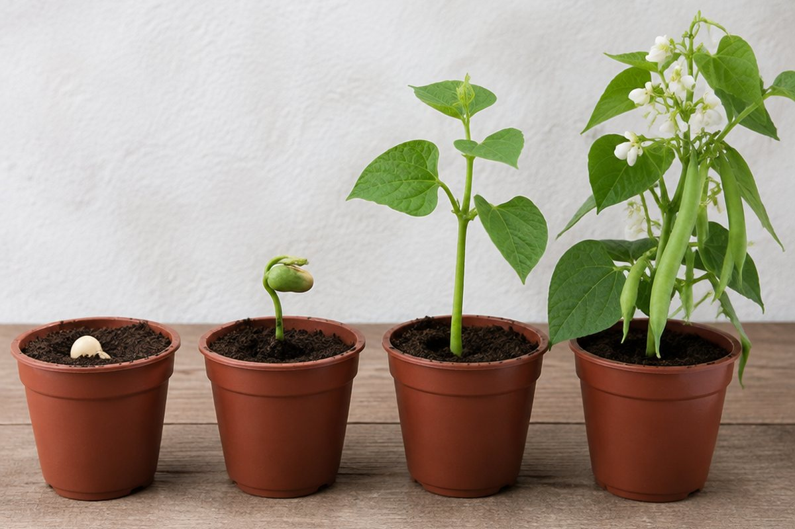

전체 단원 › 3학년 1학기 › 과학 › 식물의 한살이
씨앗은 어떻게 자라서 다시 씨앗이 될까?

작은 강낭콩 한 알을 심으면 싹이 나고 꽃이 피고, 어느새 콩이 주렁주렁 열려요. 그 과정을 따라가 볼까요?
씨가 싹 트려면
씨가 싹 트려면 알맞은 양의 '물'과 알맞은 '온도'가 필요해요. 물을 주지 않거나 너무 추우면 싹이 트지 않아요.
씨가 싹 틀 때는 씨 속에 들어 있는 양분을 쓰기 때문에 빛이 없어도 싹이 틀 수 있어요. 하지만 싹이 튼 뒤 잘 자라려면 빛이 필요해요.
물에 적신 솜 위의 강낭콩은 싹이 트고, 마른 솜 위의 강낭콩은 그대로예요.
싹이 트고 자라요
강낭콩은 싹이 틀 때 뿌리가 먼저 나오고, 이어서 떡잎 두 장이 땅 위로 올라와요. 떡잎은 씨 속 양분을 담고 있어서 시간이 지나면 쭈글쭈글해지고 떨어져요.
그다음 본잎이 나고 줄기가 길어지며 잎의 수가 늘어나요. 식물이 잘 자라려면 물, 빛, 알맞은 온도와 공기가 필요해요.
콩나물은 빛 없이 길러서 잎이 노랗지만, 햇빛을 받으면 초록색으로 변해요.
꽃이 피고 열매를 맺어요
식물이 충분히 자라면 꽃이 피고, 꽃이 진 자리에 열매가 생겨요. 열매 속에는 다음 한살이를 시작할 씨가 들어 있어요.
강낭콩은 꼬투리가 열매이고, 그 안의 콩알 하나하나가 씨예요.
사과를 반으로 자르면 가운데에 작은 씨가 들어 있어요.
한해살이와 여러해살이
강낭콩, 벼, 옥수수, 해바라기처럼 한 해 안에 한살이를 마치고 죽는 식물을 '한해살이 식물'이라고 해요.
사과나무, 감나무, 개나리, 무궁화처럼 여러 해 동안 살면서 해마다 꽃과 열매를 맺는 식물을 '여러해살이 식물'이라고 해요.
벼는 봄에 심어 가을에 거두고 나면 죽지만, 감나무는 해마다 감이 열려요.
핵심 낱말
- 한살이
- 씨가 싹 터서 자라 꽃과 열매를 맺고 다시 씨를 남기는 과정
- 떡잎
- 싹이 틀 때 처음 나오는, 양분을 담은 잎
- 본잎
- 떡잎 다음에 나오는 잎
- 한해살이 식물
- 한 해 안에 한살이를 마치고 죽는 식물
- 여러해살이 식물
- 여러 해 동안 살면서 해마다 꽃과 열매를 맺는 식물
한 줄 정리
- 씨는 알맞은 물과 온도가 있으면 싹 터요.
- 식물은 싹 → 자람 → 꽃 → 열매(씨) 순서로 한살이를 해요.
- 한해살이 식물은 한 해에, 여러해살이 식물은 여러 해 동안 살아요.
학교 교육과정 연결
- [4과04-02] 식물이 자라는 데 필요한 조건을 찾는 실험을 설계하여 수행할 수 있다.
- [4과04-03] 생물의 한살이 과정을 조사하여 생물에 따라 한살이의 유형이 다양함을 소개하는 자료를 만들어 공유할 수 있다.